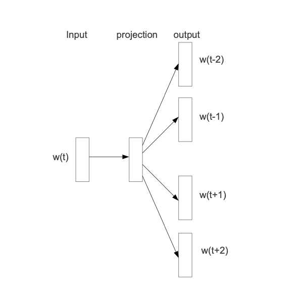
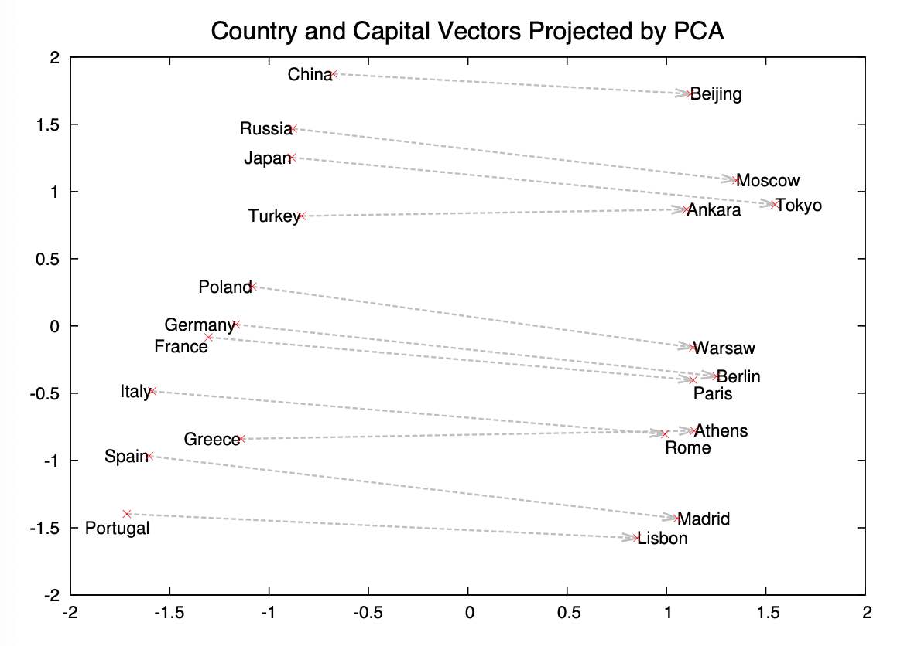

STEP3 Look at the images and extract a set of “questions” about what is not clear about their method from the images.
There are only two images in this paper, showing the simplicity of the model. The projection lives in a single layer network so, the architecture is quite simple.

This picture shows that whatever is explained ought to be fairly simple in its description. The w(t) is passed through the projection layer and fit to neighboring words. The context size is not clear from this picture. I think the key to this image is understanding that the images demonstrates the training objective, so it is training a projection embedding that is good at predicting nearby words.
Shortly after, the image is written in equation form:
I don’t think anyone loves equations, but here we can see that is the context size and it is fit given the probability of word given .
The second image demonstrates their original claim of composibility of the vectors.

This is actually a great visual. It allows you to explore relationships between countries and capitals, and ways that you can use composability to combine these vectors together.
STEP4 Read the method aiming to answer your “questions” about the paper. Focus on understanding only the things relevant for the story (i.e., to understand the contribution).
Their method includes the model a few contributed ideas: (2.1) Hierarchical Softmax, (2.2) Negative Sampling and (2.3) Subsampling of Frequent Words.
Each in their turn.
2.1 Hierarchical Softmax
A computationally efficient approximation of the full softmax is the hierarchical softmax
The approximation lies in the tree structure of the probability distribution and such that the computation is to be the length of path, which is about for words.
2.2 Negative Sampling
Based on Noise Contrastive Estimation (NCE), Negative Sampling (NEG) reframes the softmax equation into a simple logistic regression sampled against negative examples (noise).
the task is to distinguish the target word from draws from the noise distribution using logistic regression, where there are negative samples for each data sample.
This simplification is key for the paper’s ability to train on a billion tokens and therefore improving quality of results in turn.
2.3 Subsampling of Frequent Words
To reduce the words which are so frequent that they add little quality improvements into the model, the paper introduces subsampling by discarding training sets with the probability based on the frequency of the input word. By reducing the highly frequent words, it increases the quality of rare words, which typically hold key information in sentences.
The probability is given by
where is a chosen threshold, typically